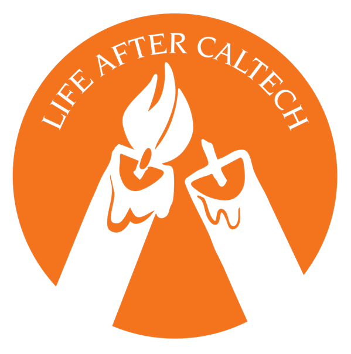

Podcast
Life After Caltech.
Life After Caltech is a student-led podcast featuring candid conversations with alumni. It's a reminder that no matter the ups and downs, there is, in fact, a life after Caltech.
Produced by the Orchid Initiative, the podcast is independent and unaffiliated with Caltech.
Hosted by
Claire Ellison — Ricketts House, 2027
Mason Smith — Page House, 2009

Listen now!
Wherever you get your podcasts.
Want to be on the show?
Interested in being a guest or helping out with production? Drop us a line.